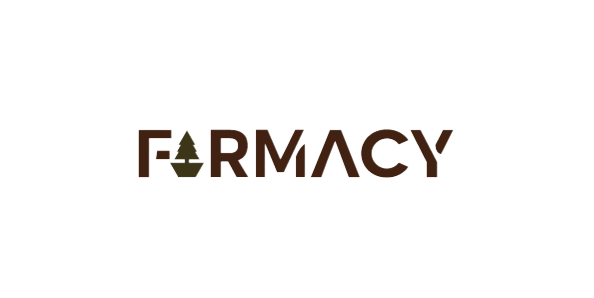

Welcome to our agricultural and crop site! As a farmer, we understand that maintaining healthy crops is essential for a successful harvest. Our platform is designed to help you identify and treat any crop diseases quickly and efficiently with the help of our advanced chatbot technology.
We understand that crop diseases can be a significant challenge for farmers, and that's why we created this platform to make it easier for you to identify and treat these issues. With our chatbot, you can be confident that your crops are receiving the care they need to grow and thrive.
Once you've provided your information, our chatbot will analyze the symptoms and provide you with a diagnosis and treatment plan. The diagnosis will inform you of the specific disease affecting your crop, while the treatment plan will offer you the best course of action to address the issue.